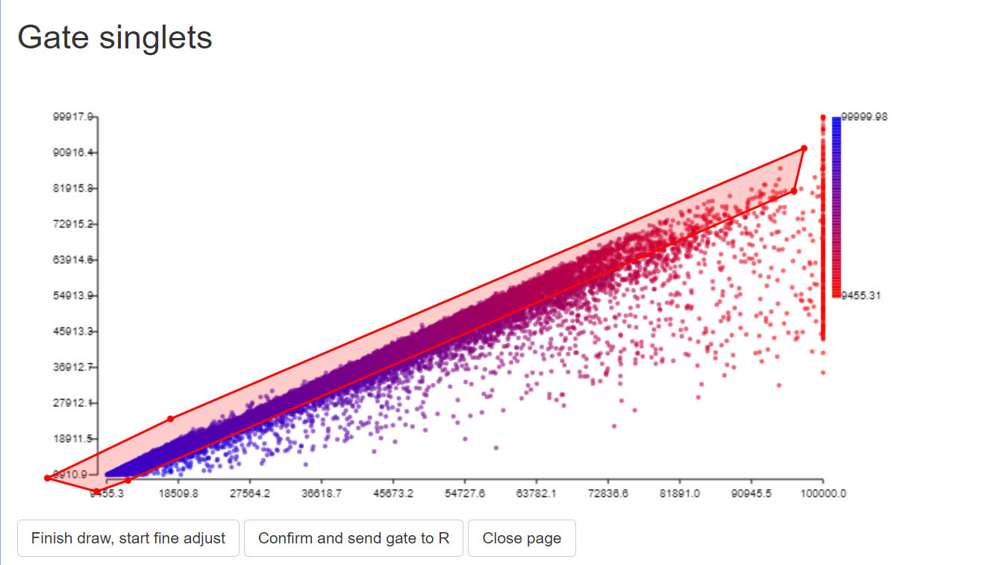
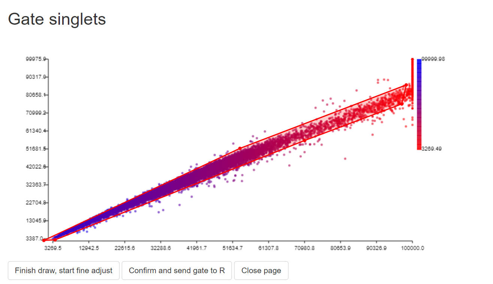
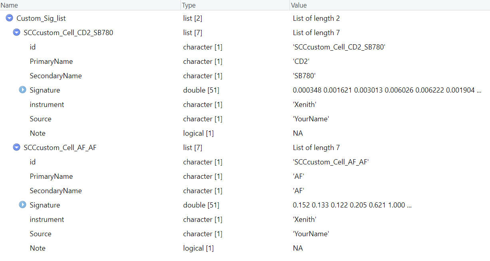
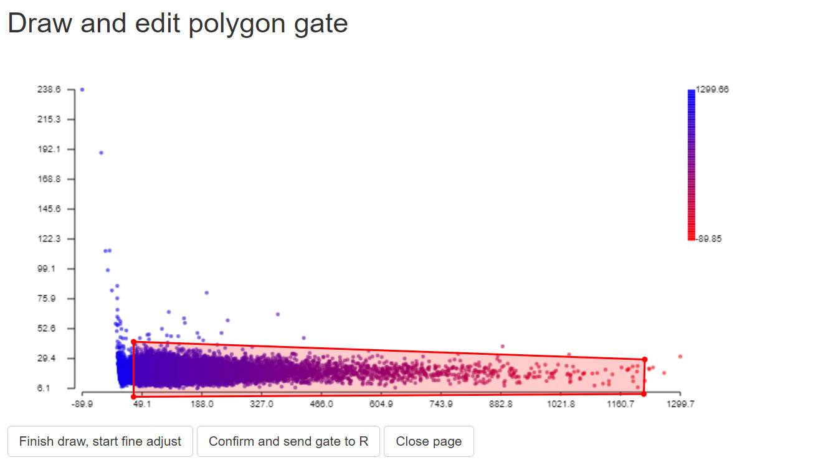
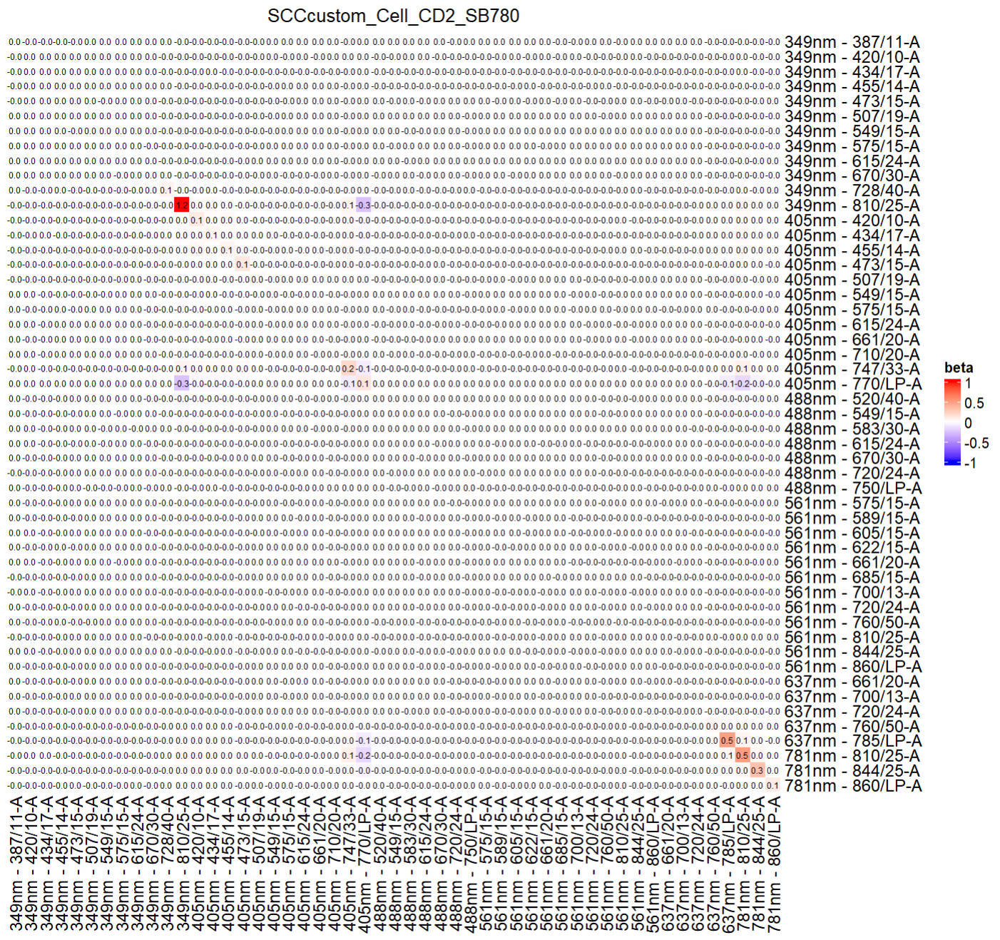
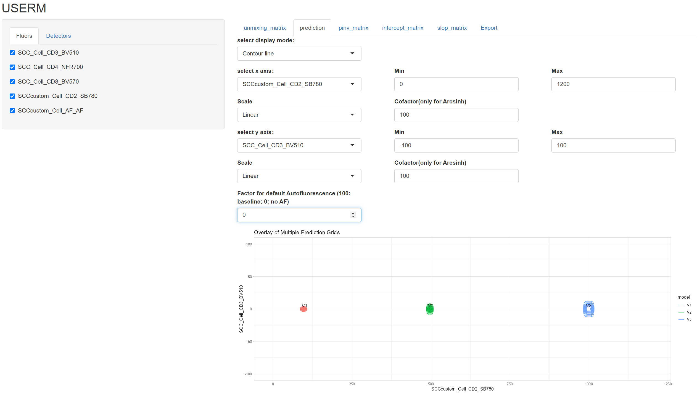
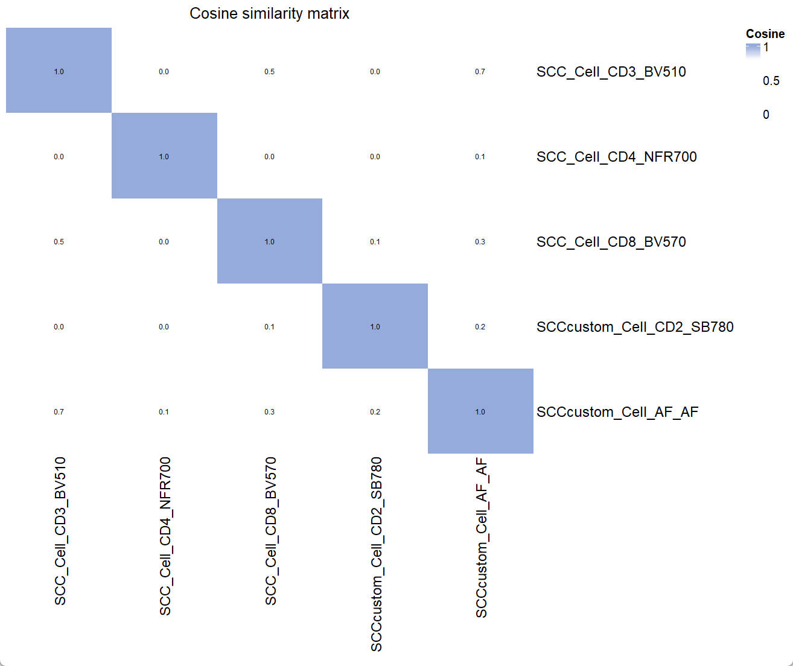

instruction for USERM use with Custom SCCs
Xiangming Cai
2025-11-22
🔍 Introduction
The USERM supports predicting spread for unmixed spectral flow cytometry data, which helps for panel design and interpratation of unmixed results. There are over 200 built-in Single-color controls (SCCs) provided by the USERM. However, users can also apply USERM on their own SCCs. This helps when users need specific fluorescence not provided by USERM, or when they are using instruments not included in the USERM.
In this instruction, we will show how to apply USERM on custom SCCs. We need to first extract signatures from SCCs and prepare res objects for each SCC. Then, we can easily predict with these custom SCCs (or together with built-in SCCs).
Step 0 📈 load packages and set custom_dir
# devtools::install_github("xiangmingcai/USERM")
library(USERM)
library(flowCore)
# devtools::install_github("xiangmingcai/GateData")
library(GateData)
library(dplyr)
library(ggplot2)
library(MASS)
library(circlize)
library(ComplexHeatmap)
custom_dir = "E:/MyFolder"
dir.create(paste0(custom_dir,"/sig"))
dir.create(paste0(custom_dir,"/res"))The custom_dir will store generated files, which is required for prediction.
Step 1 📈 Prepare signature
We need to prepare signatures for each SCC seperately. The steps for extracting Autofluroescence (AF) are almost the same, unless specified.
Normally, unstained sample is needed for AF extraction. However, you can extract AF from negative population in SCC if you do not have unstained sample.
step 1.1 read in scc fcs
data = read.FCS("E:/Data/SCC_Cell_CD2_SB780 Run 1 20251024102726.fcs") #set the path to your SCC .fcs file
# data = read.FCS("E:/Data/unstained_1 Run 1 20251024100712.fcs") #this is for AF
print(head(data@parameters@data$desc))
print(head(data@parameters@data$name))
desc = data@parameters@data$desc # "desc" or "name" are used for different insruments. Ues the one with correct detector names.
data = exprs(data)
data = as.data.frame(data)
colnames(data) = desc
head(data)> print(head(data@parameters@data$desc))
$P1S $P2S $P3S $P4S $P5S $P6S
"Time" "Run Time" "Event ID" "488 FSC-H" "488 FSC-A" "488 FSC-W"
> print(head(data@parameters@data$name))
$P1N $P2N $P3N $P4N $P5N $P6N
"Time" "Run Time" "Event ID" "FSC51-H" "FSC51-A" "FSC51-W"
> head(data)
Time Run Time Event ID 488 FSC-H 488 FSC-A 488 FSC-W 488 FSC 488 SSC-H 488 SSC-A 488 SSC-W 488 SSC 488 FSC Polar-H
1 966 966 1 11053.84 11367.57 13671.88 11367.57 26975.94 27930.18 13671.88 27930.18 12814.00
2 991 991 2 46370.00 53884.65 15234.38 53884.65 92353.13 99999.98 16210.94 99999.98 54518.63
3 1066 1066 3 53632.18 60693.39 15039.06 60693.39 38315.37 43835.29 15039.06 43835.29 62066.83
4 1135 1135 4 56737.39 64002.36 15039.06 64002.36 37044.19 43117.40 15429.69 43117.40 66313.27
5 1233 1233 5 31609.00 36513.11 15429.69 36513.11 40273.66 46527.43 15039.06 46527.43 37028.07
6 1274 1274 6 21817.04 26400.30 16015.62 26400.30 55891.99 66402.58 15625.00 66402.58 24883.68
...
405 FSC-A 405 FSC-W 405 FSC 405 SSC-H 405 SSC-A 405 SSC-W 405 SSC 349nm - 387/11-A 349nm - 387/11 349nm - 420/10-A
1 17551.05 13085.94 17551.05 9475.255 9475.971 13476.56 9475.971 2.872925 2.872925 6.1988525
2 57257.59 13671.88 57257.59 45441.043 53445.719 15234.38 53445.719 4.613342 4.613342 2.5987549
3 37115.38 13085.94 37115.38 14217.615 15710.759 14648.44 15710.759 2.360291 2.360291 8.5353394
4 46662.83 12500.00 46662.83 16527.271 18565.000 14843.75 18565.000 6.043884 6.043884 0.7271729
5 47614.96 11914.06 47614.96 15896.583 17418.504 14257.81 17418.504 1.561584 1.561584 1.0132446
6 46072.35 13476.56 46072.35 22898.090 27236.199 15625.00 27236.199 2.038452 2.038452 0.8344116
...step 1.2 set scc fcs info
peak_channel = '405nm - 770/LP-A' #
save_suf = "SCCcustom_Cell_CD2_SB780"
PrimaryName = "CD2"
SecondaryName = "SB780"
# save_suf = "SCCcustom_Cell_AF_AF" #For AF.
# PrimaryName = "AF" #For AF.
# SecondaryName = "AF" #For AF.You may use public resource (e.g. fluorofinder) to find the peak channel of your SCC.
The save_suf is important name of the SCC, which should be unique. it is recommended to follow the naming pattern shown here. There are 4 elements in the name, which are separated by underscore.
The first element is “batch” element. The built-in SCCs use “SCC1”, “SCC2”, and so on to annotate SCC files acquired in distinct batches.You can use “SCCcustom” to distinguish custom SCCs and built-in SCCs. You can also use others that makes sense to you.
The second element is “type” element. Now We only have “Cell” and “Bead”.
The third element is “PrimaryName”. Normally we put target of the antibody here，e.g. CD2.
The last element is “SecondaryName”, Normally we put fluroescence of the antibody here, e.g. SB780.
Please avoid using space or underscore in these elements.
step 1.3 gate positive popualtion and negative population
In this step, we need to find positive and negative populations. You can use the GateData R package or other packages that works for you. Here we show how to gate a subset population with the GateData
For detailed instruction of GateData, please refer to GateData
Brief instruction: draw a gate, and click 3 buttons in order.
# 1. sample cells.
#You may modify code here to sample specific set for rare markers.
data$gate0 = TRUE
data = sample_n(data, 20000)
# 2. gate singlets if need
# You can change the FSC and SSC names for specific instrument.
# use colnames(data) to find available paramters
# colnames(data)
gate1<-PolygonGating(df=data, x_col= "488 FSC-A", y_col= "488 FSC-H", feature_col= "488 FSC-A",
parentgate_col= "gate0", newgate_col= "gate1",canvas_width=800, canvas_height=400,
title_text = "Gate singlets")
data <-GateDecider(gate = gate1, df = data)
gate2<-PolygonGating(df=data, x_col= "488 SSC-A", y_col= "488 SSC-H", feature_col= "488 SSC-A",
parentgate_col= "gate1", newgate_col= "gate2",canvas_width=800, canvas_height=400,
title_text = "Gate singlets")
data <-GateDecider(gate = gate2, df = data)


# 3. gate target population (e.g. lymphocytes)
gate3<-PolygonGating(df=data, x_col= "488 SSC-A", y_col= "488 FSC-A", feature_col= "488 SSC-A",
parentgate_col= "gate2", newgate_col= "gate3",canvas_width=800, canvas_height=500,
title_text = "Gate target population")
data <-GateDecider(gate = gate3, df = data)

# 4. gate positive and negative populations.
#For autofluorescence, randomly gate a negative populaiton and assign zero to it.
data = data[data$gate3,]
gate_pos<-PolygonGating(df=data, x_col= peak_channel, y_col= "488 SSC-A", feature_col= "488 SSC-A",
parentgate_col= "gate3", newgate_col= "gate_pos",canvas_width=800, canvas_height=400,
title_text = "Gate positive population")
data <-GateDecider(gate = gate_pos, df = data)
gate_neg<-PolygonGating(df=data, x_col= peak_channel, y_col= "488 SSC-A", feature_col= "488 SSC-A",
parentgate_col= "gate3", newgate_col= "gate_neg",canvas_width=800, canvas_height=400,
title_text = "Gate negative population")
data <-GateDecider(gate = gate_neg, df = data)
table(data$gate_pos)
table(data$gate_neg)
data_pos = data[data$gate_pos,]
data_neg = data[data$gate_neg,]
# data_neg[,] <- 0 # For autofluorescence, assign zero to data_neg
# #you may save the gates if needed.
# saveRDS(list(gate1,gate2,gate3,gate_pos,gate_neg), file = paste0(custom_dir,"/",save_suf,"_gatelist.rds"))
# saveRDS(c("gate1","gate2","gate3","gate_pos","gate_neg"), file = paste0(custom_dir,"/",save_suf,"_gatenames.rds"))


step 1.4 extract signatures
#Select detectors. Please select only the detectors for unmixing
colnames(data)
cols = colnames(data)[seq(from=28, to=128, by=2)]
print(cols)
Sig = ExtractSig(df_pos = data_pos,df_neg = data_neg,
cols = cols, method = "median",
PrimaryName = PrimaryName,
SecondaryName = SecondaryName,
id = save_suf,
instrument = "Xenith",
Source = "YourName",
Note = NA)
#you may briefly check the signature
df <- data.frame(Detector = names(Sig$Signature),Signal = as.numeric(Sig$Signature))
ggplot(df, aes(x = Detector, y = Signal, group = 1)) +
geom_line(color = "steelblue", linewidth = 1) +
geom_point(color = "darkred", size = 2) +
theme_minimal() +
theme(axis.text.x = element_text(angle = 90, hjust = 1)) +
labs(title = save_suf,
x = "Detector",
y = "Signal")> colnames(data)
[1] "Time" "Run Time" "Event ID" "488 FSC-H" "488 FSC-A" "488 FSC-W"
[7] "488 FSC" "488 SSC-H" "488 SSC-A" "488 SSC-W" "488 SSC" "488 FSC Polar-H"
[13] "488 FSC Polar-A" "488 FSC Polar-W" "488 FSC Polar" "488 SSC Polar-H" "488 SSC Polar-A" "488 SSC Polar-W"
[19] "488 SSC Polar" "405 FSC-H" "405 FSC-A" "405 FSC-W" "405 FSC" "405 SSC-H"
[25] "405 SSC-A" "405 SSC-W" "405 SSC" "349nm - 387/11-A" "349nm - 387/11" "349nm - 420/10-A"
[31] "349nm - 420/10" "349nm - 434/17-A" "349nm - 434/17" "349nm - 455/14-A" "349nm - 455/14" "349nm - 473/15-A"
[37] "349nm - 473/15" "349nm - 507/19-A" "349nm - 507/19" "349nm - 549/15-A" "349nm - 549/15" "349nm - 575/15-A"
[43] "349nm - 575/15" "349nm - 615/24-A" "349nm - 615/24" "349nm - 670/30-A" "349nm - 670/30" "349nm - 728/40-A"
[49] "349nm - 728/40" "349nm - 810/25-A" "349nm - 810/25" "405nm - 420/10-A" "405nm - 420/10" "405nm - 434/17-A"
[55] "405nm - 434/17" "405nm - 455/14-A" "405nm - 455/14" "405nm - 473/15-A" "405nm - 473/15" "405nm - 507/19-A"
[61] "405nm - 507/19" "405nm - 549/15-A" "405nm - 549/15" "405nm - 575/15-A" "405nm - 575/15" "405nm - 615/24-A"
[67] "405nm - 615/24" "405nm - 661/20-A" "405nm - 661/20" "405nm - 710/20-A" "405nm - 710/20" "405nm - 747/33-A"
[73] "405nm - 747/33" "405nm - 770/LP-A" "405nm - 770/LP" "488nm - 520/40-A" "488nm - 520/40" "488nm - 549/15-A"
[79] "488nm - 549/15" "488nm - 583/30-A" "488nm - 583/30" "488nm - 615/24-A" "488nm - 615/24" "488nm - 670/30-A"
[85] "488nm - 670/30" "488nm - 720/24-A" "488nm - 720/24" "488nm - 750/LP-A" "488nm - 750/LP" "561nm - 575/15-A"
[91] "561nm - 575/15" "561nm - 589/15-A" "561nm - 589/15" "561nm - 605/15-A" "561nm - 605/15" "561nm - 622/15-A"
[97] "561nm - 622/15" "561nm - 661/20-A" "561nm - 661/20" "561nm - 685/15-A" "561nm - 685/15" "561nm - 700/13-A"
[103] "561nm - 700/13" "561nm - 720/24-A" "561nm - 720/24" "561nm - 760/50-A" "561nm - 760/50" "561nm - 810/25-A"
[109] "561nm - 810/25" "561nm - 844/25-A" "561nm - 844/25" "561nm - 860/LP-A" "561nm - 860/LP" "637nm - 661/20-A"
[115] "637nm - 661/20" "637nm - 700/13-A" "637nm - 700/13" "637nm - 720/24-A" "637nm - 720/24" "637nm - 760/50-A"
[121] "637nm - 760/50" "637nm - 785/LP-A" "637nm - 785/LP" "781nm - 810/25-A" "781nm - 810/25" "781nm - 844/25-A"
[127] "781nm - 844/25" "781nm - 860/LP-A" "781nm - 860/LP" "GateMatch" "SortIndex" "DropsSorted"
[133] "SortDestination" "gate0" "gate1" "gate2" "gate3" "gate_pos"
[139] "gate_neg"
> print(cols)
[1] "349nm - 387/11-A" "349nm - 420/10-A" "349nm - 434/17-A" "349nm - 455/14-A" "349nm - 473/15-A" "349nm - 507/19-A"
[7] "349nm - 549/15-A" "349nm - 575/15-A" "349nm - 615/24-A" "349nm - 670/30-A" "349nm - 728/40-A" "349nm - 810/25-A"
[13] "405nm - 420/10-A" "405nm - 434/17-A" "405nm - 455/14-A" "405nm - 473/15-A" "405nm - 507/19-A" "405nm - 549/15-A"
[19] "405nm - 575/15-A" "405nm - 615/24-A" "405nm - 661/20-A" "405nm - 710/20-A" "405nm - 747/33-A" "405nm - 770/LP-A"
[25] "488nm - 520/40-A" "488nm - 549/15-A" "488nm - 583/30-A" "488nm - 615/24-A" "488nm - 670/30-A" "488nm - 720/24-A"
[31] "488nm - 750/LP-A" "561nm - 575/15-A" "561nm - 589/15-A" "561nm - 605/15-A" "561nm - 622/15-A" "561nm - 661/20-A"
[37] "561nm - 685/15-A" "561nm - 700/13-A" "561nm - 720/24-A" "561nm - 760/50-A" "561nm - 810/25-A" "561nm - 844/25-A"
[43] "561nm - 860/LP-A" "637nm - 661/20-A" "637nm - 700/13-A" "637nm - 720/24-A" "637nm - 760/50-A" "637nm - 785/LP-A"
[49] "781nm - 810/25-A" "781nm - 844/25-A" "781nm - 860/LP-A"


step 1.5 add signatures to Custom_Sig_list
# 1. Read in Custom_Sig_list
#For first SCC (that means you do not have a Custom_Sig_list yet)
Custom_Sig_list = list()
#If you already have a Custom_Sig_list
Custom_Sig_list = readRDS(paste0(custom_dir,"/sig/Custom_Sig_list.rds"))
# 2. add signatures to Custom_Sig_list
Custom_Sig_list[[length(Custom_Sig_list)+1]] = Sig
names(Custom_Sig_list)[length(Custom_Sig_list)] = Custom_Sig_list[[length(Custom_Sig_list)]]$id
# You may delete a certain Sig from the Custom_Sig_list using this code:
# Custom_Sig_list[[length(Custom_Sig_list)]] = NULL
# 3. save updated Custom_Sig_list
saveRDS(Custom_Sig_list, file = paste0(custom_dir,"/sig/Custom_Sig_list.rds"))In the end, you should have a Custom_Sig_list containing elements like this:

If you have more SCCs, you should have more elements in the Custom_Sig_list.
Step 2 📈 Prepare res obj
Now you should have at least one SCC signature and one AF signature(necessary for res obj preparation) in the Custom_Sig_list. If so, we can proceed to prpare res obj for each fluorescence, including the AF.
step 2.1 read Custom_Sig_list and prepare Sig_mtx
Custom_Sig_list = readRDS(paste0(custom_dir,"/sig/Custom_Sig_list.rds"))
Sig_info = querySig(Sig_list = Custom_Sig_list)
fluors_selected = c(Sig_info$id[c(1,2)])
print(fluors_selected)
Sig_mtx = getSigMtx(ids = fluors_selected, Sig_list = Custom_Sig_list)Here we need to select all target fluorescence, including AF. The order do not matter now, since we will assign target index and AF index later.
step 2.2 read scc fcs
data = read.FCS("E:/Data/SCC_Cell_CD2_SB780 Run 1 20251024102726.fcs")
# data = read.FCS("E:/Data/unstained_1 Run 1 20251024100712.fcs") #For AF
print(head(data@parameters@data$desc))
print(head(data@parameters@data$name))
desc = data@parameters@data$desc # "desc" or "name" are used for different insruments. Ues the one with correct detector names.
data = exprs(data)
data = as.data.frame(data)
colnames(data) = desc
head(data)step 2.3 set target and AF info
print(colnames(Sig_mtx))
save_suf = "SCCcustom_Cell_CD2_SB780"
idx_target_fluor = 1
idx_AF_fluor = 2
# For AF
# save_suf = "SCCcustom_Cell_AF_AF"
# idx_target_fluor = 2
# idx_AF_fluor = 1 #For AF, use any other scc here
#check if the idx are correct
print(colnames(Sig_mtx)[idx_target_fluor])
print(colnames(Sig_mtx)[idx_AF_fluor])> print(colnames(Sig_mtx))
[1] "SCCcustom_Cell_CD2_SB780" "SCCcustom_Cell_AF_AF"
> colnames(Sig_mtx)[idx_target_fluor]
[1] "SCCcustom_Cell_CD2_SB780"
> colnames(Sig_mtx)[idx_AF_fluor]
[1] "SCCcustom_Cell_AF_AF"Here we need to choose the index (idx) for target fluorescence and corresponding AF. For example, we want to prepare res obj for SCCcustom_Cell_CD2_SB780 first. So we assign the index for “SCCcustom_Cell_CD2_SB780” as idx_target_fluor. The “SCCcustom_Cell_AF_AF” is used as corrsponding AF.
If we want to prepare res obj for AF. We can simply assign the index for the AF as idx_target_fluor, and use any other index as idx_AF_fluor.
step 2.4 gate siglets and target population
Here we want to use as many cells as possible to calculate parameters for the res obj. However, we need to gate required cells first. To speed up the gating step, we can use a sampled subset to make gates and then subset from all cells.
# 1. sample cells.
#You may modify code here to sample specific set for rare markers.
data$gate0 = TRUE
data_backup = data
data = sample_n(data, 20000)
# 2. gate singlets if need
#You can change the FSC and SSC names for specific instrument.
# use colnames(data) to find available paramters
# colnames(data)
gate1<-PolygonGating(df=data, x_col= "488 FSC-A", y_col= "488 FSC-H", feature_col= "488 FSC-A",
parentgate_col= "gate0", newgate_col= "gate1",canvas_width=800, canvas_height=400,
title_text = "Gate singlets")
data <-GateDecider(gate = gate1, df = data)
gate2<-PolygonGating(df=data, x_col= "488 SSC-A", y_col= "488 SSC-H", feature_col= "488 SSC-A",
parentgate_col= "gate1", newgate_col= "gate2",canvas_width=800, canvas_height=400,
title_text = "Gate singlets")
data <-GateDecider(gate = gate2, df = data)
# 3. gate target population (e.g. lymphocytes)
gate3<-PolygonGating(df=data, x_col= "488 SSC-A", y_col= "488 FSC-A", feature_col= "488 SSC-A",
parentgate_col= "gate2", newgate_col= "gate3",canvas_width=1500, canvas_height=1500,
title_text = "Gate target population")
data <-GateDecider(gate = gate3, df = data)
# 4. subset with all cells
data = data_backup
data <-GateDecider(gate = gate1, df = data)
data <-GateDecider(gate = gate2, df = data)
data <-GateDecider(gate = gate3, df = data)
data = data[data$gate3,]


step 2.5 unmix with target_fluor and AF
data = data[,rownames(Sig_mtx)] #cells x detectors
R = t(as.matrix(data)) # detectors x cells
A = Sig_mtx[,c(idx_target_fluor,idx_AF_fluor), drop = FALSE] # detectors x fluors
A_pinv = ginv(A)
B = A_pinv %*% R
t_B = t(B)
colnames(t_B) = c(colnames(Sig_mtx)[idx_target_fluor],colnames(Sig_mtx)[idx_AF_fluor])
data = cbind(data,t_B)step 2.6 gate normal samples
It is common to find outliers or weird populations in SCC sample. However, we only need stable positive population, with as wide range as possible. So here we need to gate this normal population that we need.
High quality data is needed, which means the cells/beads intensity ranges form low to very high value and covers the estiamted intensity. Also, it is very important to have enough amount of sample size to have robust estimation. The higher the more robust, > 10000 cells is recommended.
If the outlier makes the gating difficult, you may remove outliers first.
# You may remove some outliers for easier gating
# data = data[(data[,colnames(Sig_mtx)[idx_target_fluor]] <
# quantile(data[,colnames(Sig_mtx)[idx_target_fluor]],0.999)),]
# data = data[(data[,colnames(Sig_mtx)[idx_target_fluor]] >
# quantile(data[,colnames(Sig_mtx)[idx_target_fluor]],0.01)),]
data$gate0 = TRUE
data_backup = data
data = sample_n(data, 20000)
gate_normal<-PolygonGating(df=data, x_col= colnames(Sig_mtx)[idx_target_fluor],
y_col= colnames(Sig_mtx)[idx_AF_fluor],
feature_col= colnames(Sig_mtx)[idx_target_fluor],
parentgate_col= "gate0", newgate_col= "gate_normal",canvas_width=800, canvas_height=400)
data = data_backup
data = GateDecider(gate = gate_normal, df = data)
data = data[data$gate_normal,rownames(Sig_mtx)]
#you may save gate_normal is you want
# saveRDS(list(gate_normal), file = paste0(custom_dir,"/",save_suf,"_gatelist.rds"))
# saveRDS(c("gate_normal"), file = paste0(custom_dir,"/",save_suf,"_gatenames.rds"))

To gate normal population for AF, we just need to gate a stable negative populaiton:

2.7 calculate and save residual model
R = as.matrix(data)
A_Target = Sig_mtx[,c(idx_target_fluor), drop = FALSE]
A_AF = Sig_mtx[,c(idx_AF_fluor), drop = FALSE]
ResObj = CreateRes(id = colnames(Sig_mtx)[idx_target_fluor], R = R, A_Target = A_Target, A_AF = A_AF)
ResObj = SlopEstimation(Res = ResObj, bin_num = 30)
#You may briefly visualize the slope matrix
col_fun = colorRamp2(c(-1, 0, 1), c("blue", "white", "red"))
Heatmap(ResObj$slopMtx,col = col_fun, cluster_rows = FALSE,cluster_columns = FALSE,
cell_fun = function(j, i, x, y, width, height, fill) {
grid.text(sprintf("%.1f", ResObj$slopMtx[i, j]), x, y, gp = gpar(fontsize = 6))
},column_title = colnames(Sig_mtx)[idx_target_fluor],name = "beta")
saveRDS(ResObj, file = paste0(custom_dir,"/res","/ResObj_",save_suf,".rds"))> ResObj = SlopEstimation(Res = ResObj, bin_num = 30)
calculating cov matrix...
(-) [===============================] 100% [Elapsed time: 00:00:09 || Estimated time remaining: 0s]
calculating slop matrix...

For AF:

The generated ResObj contains all details, which will be used for prediction.

Step 3 Use custom res obj and built-in res obj together to make spread prediction
Once we have res obj for all custom SCC ready, we can make prediction!
If you are falimilar with the basic use of USERM, it will be very easy to adapt it to the custom SCC. So, please try the built-in SCC first instruction.
Here we show how to use both custom SCC and built-in SCC together. If you only use custom SCC, just ignore the code for built-in SCC.
Note: the custom_dir contains following files now:
MyFolder/
├── res/
│ ├── ResObj_SCCcustom_Cell_AF_AF.rds
│ └── ResObj_SCCcustom_Cell_CD2_SB780.rds
├── sig/
│ └── Custom_Sig_list.rdsRemember to keep these files, so that you do not need to generate them again next time!
step 3.1 check available custom fluorescence
First, read in the Custom_Sig_list.
Custom_Sig_list = readRDS(paste0(custom_dir,"/sig/Custom_Sig_list.rds"))
Custom_Sig_info = querySig(Sig_list = Custom_Sig_list)
fluor_to_check = Custom_Sig_info$id[1]
print(fluor_to_check)
checkSig_linePlot(id = fluor_to_check, Sig_list = Custom_Sig_list)You can check the signature of fluorescence of interest.
You can also check the res obj of interested fluorescence.
#get Residual Obj
ResObj = getRes(id = fluor_to_check,custom_dir = paste0(custom_dir,"/res"))
checkRes_slopMtx(Res = ResObj)
checkRes_interceptMtx(Res = ResObj)
print(ResObj$bin_mids)
checkRes_covMtx(Res = ResObj,bin=3)
ResObj$detectors
checkRes_covScatter(Res = ResObj,
detector1 = ResObj$detectors[1],
detector2 = ResObj$detectors[2])step 3.2 Select fluors and create UsermObj
Custom_fluors_selected = c(Custom_Sig_info$id[c(1,2)])
print(Custom_fluors_selected)
Custom_Sig_mtx = getSigMtx(ids = Custom_fluors_selected,Sig_list = Custom_Sig_list)
dim(Custom_Sig_mtx)> print(Custom_fluors_selected)
[1] "SCCcustom_Cell_CD2_SB780" "SCCcustom_Cell_AF_AF"
> dim(Custom_Sig_mtx)
[1] 51 2If you want to use some built-in fluorescence, you can select them as well.
builtin_Sig_info = querySig()
builtin_fluors_selected = c(builtin_Sig_info$id[c(34,35,36)])
print(builtin_fluors_selected)
builtin_Sig_mtx = getSigMtx(ids = builtin_fluors_selected)
dim(builtin_Sig_mtx)> print(builtin_fluors_selected)
[1] "SCC_Cell_CD3_BV510" "SCC_Cell_CD4_NFR700" "SCC_Cell_CD8_BV570"
> dim(builtin_Sig_mtx)
[1] 51 3Now we can bind these 2 Sig_mtx, and add res obj to UsermObj one by one.
Sig_mtx = cbind(builtin_Sig_mtx,Custom_Sig_mtx)
UsermObj = CreateUserm(A = Sig_mtx)
#add ResObj into UsermObj
for (save_suf in colnames(builtin_Sig_mtx)) {
ResObj = getRes(id = save_suf)
UsermObj = AddRes2Userm(Res = ResObj, Userm = UsermObj)
}
for (save_suf in colnames(Custom_Sig_mtx)) {
ResObj = getRes(id = save_suf,custom_dir = paste0(custom_dir,"/res"))
UsermObj = AddRes2Userm(Res = ResObj, Userm = UsermObj)
}step 3.3 prediction
Prediction is the same as the basic use. Here we show some simple case. You can explore more when your data is ready.
PredOneSpread(Userm = UsermObj,population_id = c("P1"))

UsermObj$Intensity_mtx[,1] = 0
UsermObj$Intensity_mtx[,2] = UsermObj$Intensity_mtx[,1]
UsermObj$Intensity_mtx[,3] = UsermObj$Intensity_mtx[,1]
UsermObj$Intensity_mtx[4,1] = 100
UsermObj$Intensity_mtx[4,2] = 500
UsermObj$Intensity_mtx[4,3] = 1000
names(UsermObj$Intensity_mtx) = c("P1","P2","P3")
PredMultipleSpread(Userm = UsermObj,population_ids = c("P1","P2","P3"))

Coef_mtx = EstimateCoefMtx(Userm = UsermObj)
Vis_Mtx(mat = Coef_mtx,mincolor = "white",midcolor = "white", maxcolor = "#95ABDB",
max = 20,mid = 10,min = 0,legend_name = "Coef",
title = "Coefficient of residual model matrix (Coef Matrix) (row spread into column)")

Hotspot_mtx = EstimateHotspotMtx(A = UsermObj$A)
Vis_Mtx(mat = Hotspot_mtx,mincolor = "white",midcolor = "white", maxcolor = "#95ABDB",
max = 2,mid = 1,min = 0,legend_name = "Hotspot",
title = "Hotspot matrix")

Similarity_mtx = EstimateSimilarityMtx(A = UsermObj$A)
Vis_Mtx(mat = Similarity_mtx,mincolor = "white",midcolor = "white", maxcolor = "#95ABDB",
max = 1,mid = 0.8,min = 0,legend_name = "Cosine",
title = "Cosine similarity matrix")

📚 Citation
If you use this package in your research, please cite our paper and the package as:
Xiangming Cai, Sara Garcia-Garcia, Nick Rohrbacker, Michaela Gianniou, Juan J. Garcia Vallejo. Manuscript in preparation. (to be update)
Cai X (2025). _USERM: Unmixing Spread Estimation with Residual Model_. R package version
1.0.0, <https://github.com/xiangmingcai/USERM>.
@Manual{,
title = {USERM: Unmixing Spread Estimation with Residual Model},
author = {Xiangming Cai},
year = {2025},
note = {R package version 1.0.0},
url = {https://github.com/xiangmingcai/USERM},
}